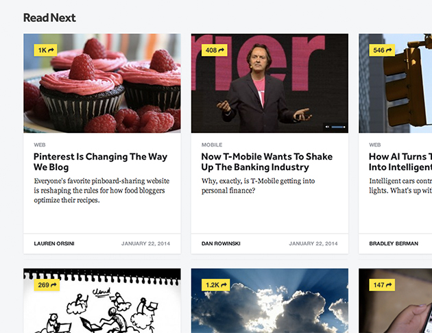
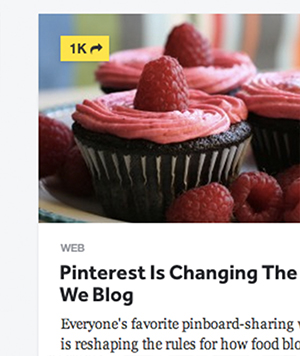
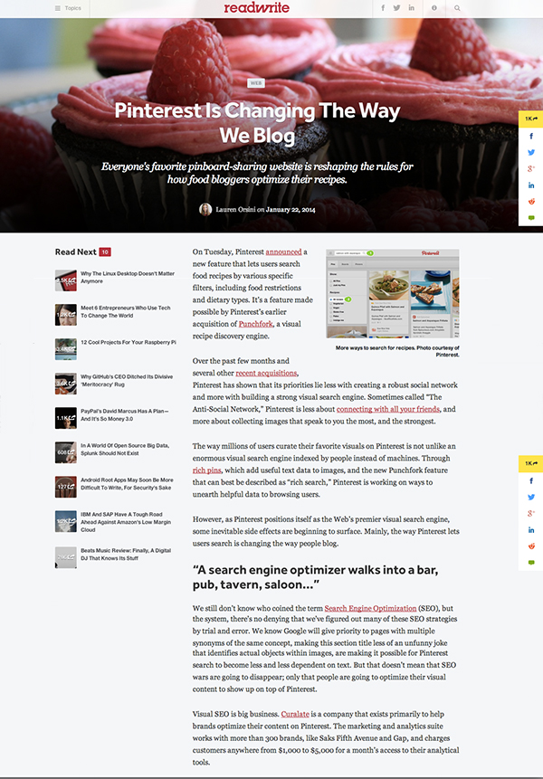
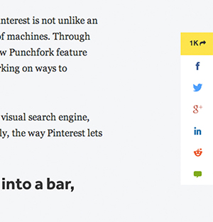

ReadWrite one of the most widely read and respected tech news sites in the world uses social capital as a link builder. They have a little visual treatment for each article thumbnail image and title that shows how many readers have clicked to read the article. Strong and smart way to show the readers what's popular and trending among the other readers. Very prominently shown and most likely dynamic.

When reading the article, you also see dynamical social capital be used to show how many readers have share among twitter, facebook, etc.


back home